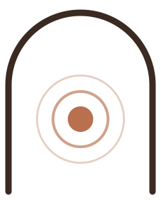
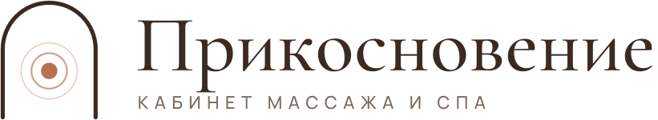
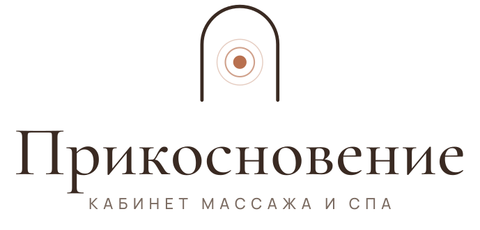
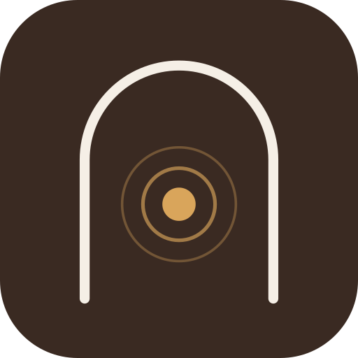
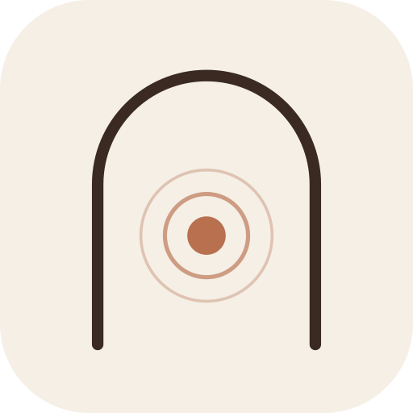
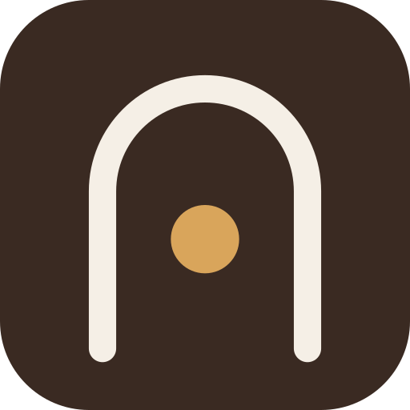

Фирменный стиль · v1
Кабинет массажа и СПА в Хабаровске. Стиль собран из того, что гости ценят в отзывах: бережные руки мастера, кедровая бочка, тёплый свет и чай после процедуры. Отсюда тёплые природные цвета, мягкая антиква и знак-арка.







Молоко#F5EFE6 · основной фон
Лён#EADFD0 · второй фон, карточки
Кедр#3A2A22 · текст, тёмные блоки
Глина#B8704F · акцент, кнопки, курсив
Мёд#D9A55B · акцент на тёмном
Шалфей#8C927A · дополнительный, для печати и соцсетей
Мягкие руки, кедровый пар
Cormorant Garamond: заголовки и крупный текст. Курсив цвета глины выделяет главное слово.
Кабинет массажа и спа
Manrope: основной текст, кнопки, подписи. Подписи набираются прописными с разрядкой.
Оба шрифта бесплатные (Google Fonts, лицензия OFL), подходят для сайта, печати и соцсетей.